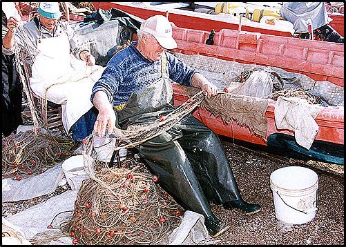
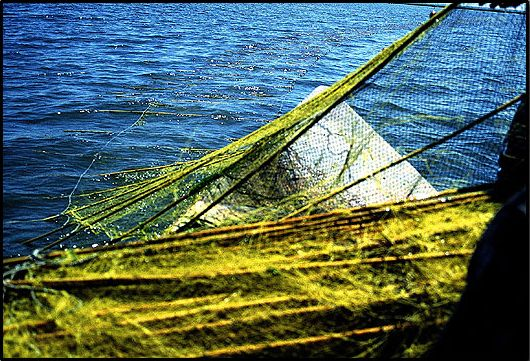
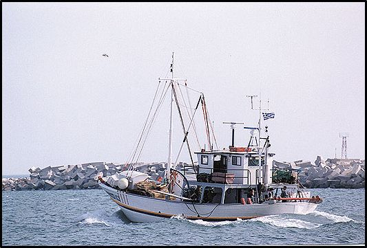
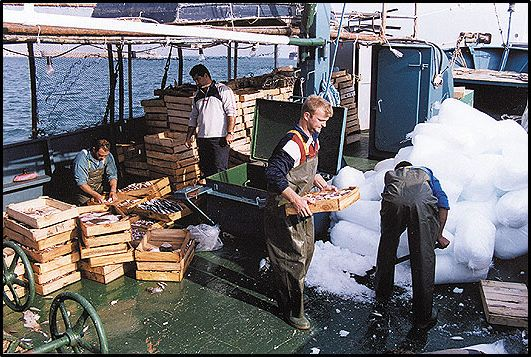
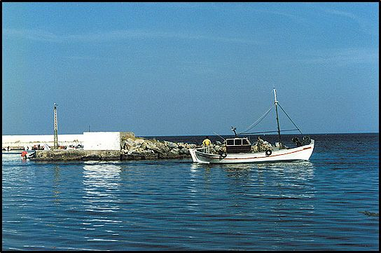
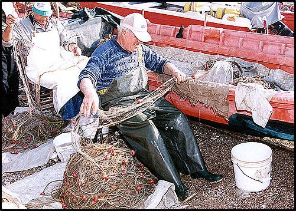
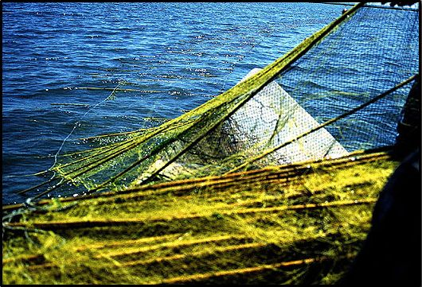
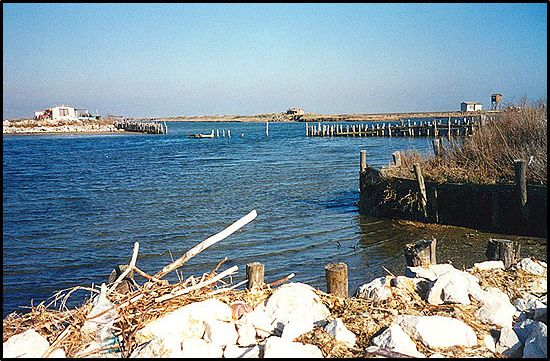

Στην ευρύτερη θαλάσσια περιοχή ασκείται η παράκτια και η μέση αλιεία. Οι ψαράδες της παράκτιας αλιείας χρησιμοποιούν κυρίως τα στατικά δίχτυα, ενώ για την μέση αλιεία χρησιμοποιούνται οι μηχανότρατες και τα γρι-γρι.
Για την αλιεία των ψαριών που έχουν μεγάλη αξία (σαργούς, συναγρίδες, φαγκριά, λιθρίνια), χρησιμοποιούνται επίσης τα παραγάδια.
Για το ψάρεμα των χταποδιών πολύ διαδεδομένα είναι τα νταούλια καθώς επίσης και η μπαρκαρόλα.
Αλιεία με συρόμενα δίχτυα
Μια αρκετά διαδεδομένη μέθοδος αλιείας στη Μεσόγειο γενικά είναι αυτή στην οποία ειδικεύονται αρκετά επαγγελματικά σκάφη, σαρώνοντας τον βυθό με τα δίχτυα τους, προκαλώντας έτσι ανυπολόγιστες καταστροφές στο θαλάσσιο περιβάλλον. Η αλιεία με συρόμενα δίχτυα κοντά στην ακτή αποτελεί σοβαρό κίνδυνο όχι μόνο για τη θαλάσσια πανίδα, αλλά και για τους φυτικούς οργανισμούς στους οποίους στηρίζεται η ζωή του βυθού. Μια τέτοια καταστροφή εμποδίζει την «συνεύρεση» των ειδών την εποχή της αναπαραγωγής τους, βάζει σε κίνδυνο την ίδια τους την επιβίωση και ελαττώνει τον αριθμό τους. Από τα 500 είδη ψαριών που υπήρχαν στη Μεσόγειο, το ένα τρίτο περίπου έχει εξαφανιστεί στη διάρκεια του τελευταίου αιώνα. Στην ελάττωση των ιχθυαποθεμάτων συνέβαλε καθοριστικά η παράνομη αλιεία.
Κίνδυνοι από την υπεραλίευση
Τις τελευταίες δεκαετίες, τα ιχθυοαποθέματα της ευρύτερης θαλάσσιας περιοχής του Θρακικού πελάγους, έχουν ελαττωθεί σημαντικά. Η υπεραλίευση, σε συνδυασμό με την παράνομη άσκηση του ψαροντούφεκου και διάφορων άλλων μεθόδων αλιείας, έχουν αρνητική επίπτωση τόσο στην ιχθυοπανίδα όσο και στην χλωρίδα του βυθού.




